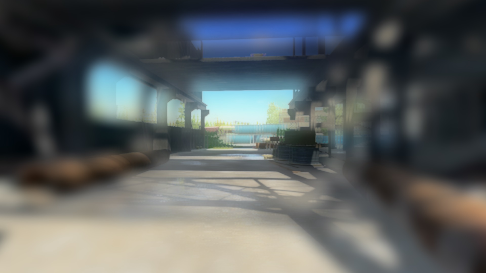
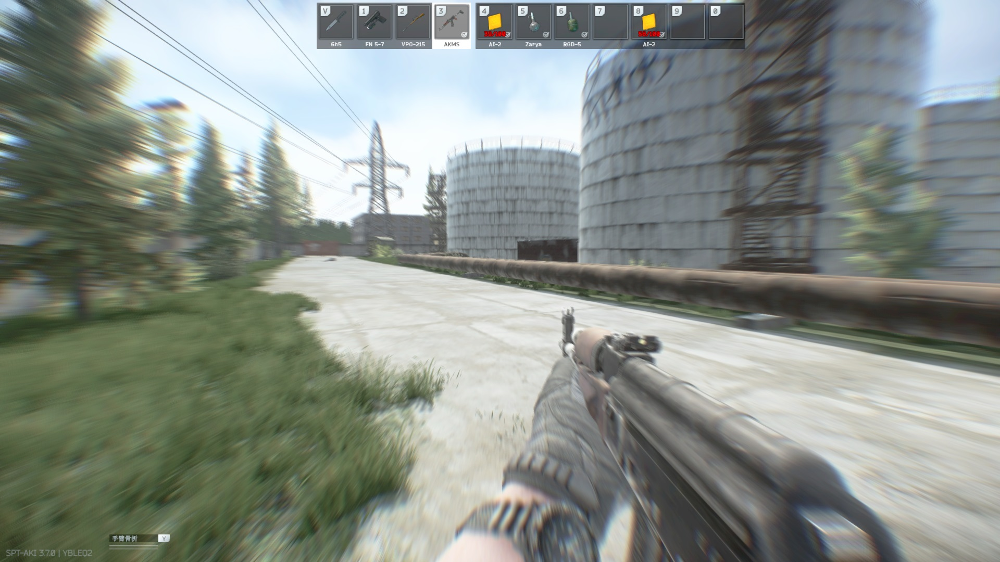
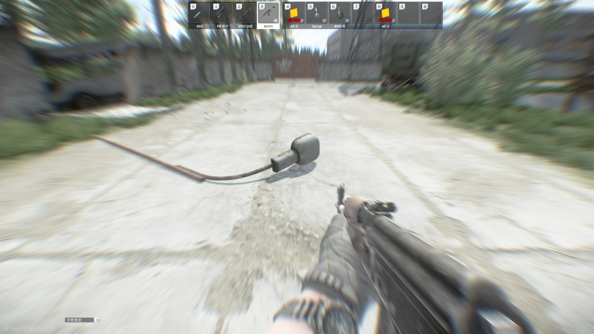

解离
解离(Dissociation)是一种抑制型药效。可引起解离的药物被称呼为解离剂。据信，睡眠就是一种具有高度选择性的解离
常见的五大解离剂为：
当然也有O-PCE这种byd胶囊，以及“替来他声称是什么仙丹 策划药 实则是兽药 神经毒性挺大的 能玩是能玩”Spring风
药理作用
诱因
睡眠、心理疾病所引起的自发性解离、药物
作用机理
谷氨酸主要激动两个受体，NMDA与AMPA。NMDA受体负责将感受到的感知，传递到思考到的认知。拮抗NMDA受体 后，感知不能被正确传递到认知，即感知与认知脱节，认知也随之减速，造成解离。比喻地，感知就像肉体，认知就像灵魂
NMDA受体拮抗的俗称是解离，解离的俗称是灵魂出窍
药物作用
-
慢性恶性作用：感知认知判断力下降、记忆学习力下降、人格解体症、阿兹海默症、晕迫 急性恶性作用：人格解体、自我死亡、昏迷、躁狂或抑郁、焦虑、精神疾病症状
-
慢性中性作用：去抑制、情感隔离、重整合 急性中性作用：时间空间定向力下降、更容易陷入情感
-
慢性良性作用：抗抑郁 急性良性作用：欣快感、幸福感、镇痛、运动增益
恶性作用
感知、认知、判断力下降
这是解离最要死的危害。详见右美沙芬的危害专题-心理杀伤性、成瘾性所述
无论如何，解离造成服药者无法认知到危害本身
记忆、学习力下降
-
关于记忆。解离更多地造成，过去的记忆更难被想起。例如笔者我自己，在我od前，我每夜都被过去的糟粕记忆所折磨，od后就不会了，因为我很难想起来，除非有一个关键词强烈地被提起。但这并不完美，因为我于此同时，也想不起来od前我曾度过的一段美好日子了。我仔细想想，那时我每天晚上都会玩温馨的galgame，每天都吃着丰盛可口的佳肴，或者是好吃的螺蛳粉……
- 关于学习力。例如，熟悉一片区域的建筑结构、学习一个科目的知识。这就是很多解离者学习很困难的原因
人格解体/症
会诱发之后的阿兹海默症，表现在恢复术中有说明，于此展开说明
- “灵魂出窍的感觉”
- 低程度解离，操控自己时，感觉自己有些动作不需要自己去想怎么做，因为感知不到自己正在思考；中程度解离，操控自己时，就像拿着线绳操控傀儡一样，感觉很不真实。高程度解离，操控自己时，无法感知到正在操控自己
- 观察自己身上发生的事情，有一种第三人称感，就好像是另外一个人身上发生的，就好像自己在操控一个游戏角色
- 对肢体的操控被远离了，感到自己的躯体不是自己的，就像被压麻的双臂一样。例如感到“我是谁”
- 对自身的观察增强，对外界的关注减弱
- 自己与世界分隔开来，无归属感、虚无感。例如感到“我活着的意义是什么”、“这个世界是什么”
- 最高解离状态下，情绪、躯体控制会直接断开，就像睡死了一样
- 感知失真
这常与脱离现实的体验有关。因此，od解离剂的人，一旦发现自己对现实产生了怀疑，就可以怀疑是不是解离剂干的了
实际上，虚无主义由人格解体引起，是解离的
自我死亡
常伴随着昏迷。就像自己已经死了一样，实际上，解离是趋近于死亡的过程
躁狂或抑郁、焦虑、精神疾病症状
关于抑郁与焦虑，可以看反解离中“抑郁、焦虑/抗抑郁、抗焦虑”的内容。解离本身就会造成一定的精神错乱。
晕迫
不需要过多解释
中性
去抑制
解离剂会去除对行为的抑制，包括不限于：社交、言语、思维方式。例如，解离者勇敢地与路人搭讪，解离者直抒胸臆，解离者想出了一个古怪但有效的解题方式。这被一些人误以为是“开窍”，实际上，通过无害的催眠也可以做到这点
情感隔离
解离者的情感与外界隔离开来，有时这可以保护解离者免遭外界的情绪伤害，但这又会影响到解离者的情感与共情
重整合
已经在“感知、认知、判断力下降”一框中说过了，对自己认知的改写。确信这就是解离的抗抑郁作用的来源
时间空间定向力下降
例如，未伴随失忆的解离者会感到时间很慢，伴随失忆的解离者会感到时间很快；解离者会对躺在地板上不感到诧异，搭配运动增益，就像一些游戏里的角色一样，可以轻松地倒地或者移动身体，甚至躺时不会挑剔躺姿
良性
抗抑郁
关于抗抑郁，可以看反解离中“抑郁、焦虑/抗抑郁、抗焦虑”的内容。
欣快感、幸福感
What can I say? 这是由于解离将过去的痛苦解离出去了，剩下的就只有赶走侵略者的喜悦了
镇痛
由于感知下降，解离可以导致痛觉被抽离。它并不像阿片类麻醉剂那样“压制住痛觉”，而更像“解离掉痛觉”。解离造成的镇痛麻醉，是一种特有的麻醉类型，叫做 解离型麻醉/分离麻醉
运动增益
确信这是由于对累觉的感知下降导致的。据笔者本人测试，百米冲刺地奔跑约220m后，也仅会感到心跳加速极快。甚至可以像CS里那样连跳。当然，运动造成的疲软是无法避免的
反解离
反解离是为了描述相反于解离的药理作用，而造出来的词。是一种兴奋型药效。可引起反解离的药剂成为反解离剂。 解离代表NMDA受体拮抗，反解离就自然代表NMDA受体激动了
目前认定的反解离剂有：
西坦类药物、Ampakines（安帕金）、NMDA、N-甲基天冬氨酸、苏糖酸镁、茶氨酸
图示
图示（以塔科夫为例子）


